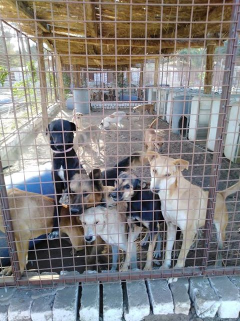
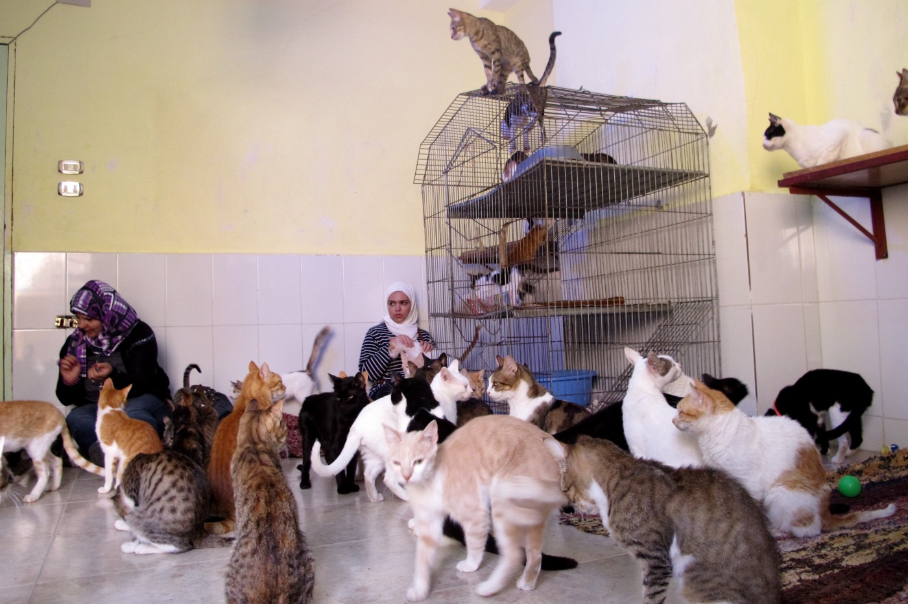
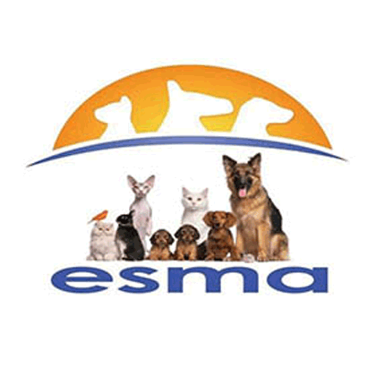
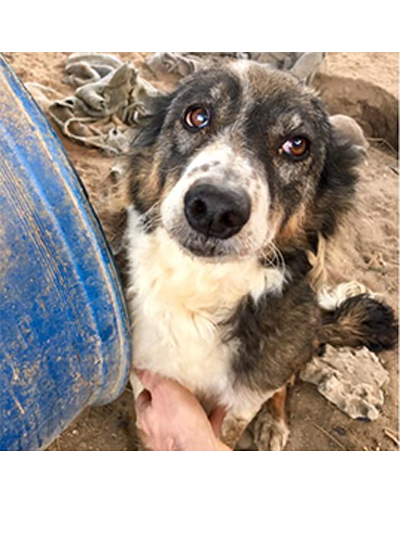
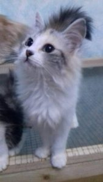
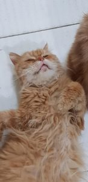

Shelters for pets


Country superstar Miranda Lambert is known for being a huge animal lover and recent donations her charity has made to animal shelters across the country are making it a little easier for others to be too.
The singer's "MuttNation Foundation," founded in 2009, "aims to promote and facilitate the adoption of shelter pets, encourage spay and neuter for all pets, and educate the public about the importance and beneficial impact of these actions," according to its website.
As part of its 2019 "Mutts Across America" campaign, the foundation has awarded $150,000 in grants to 50 shelters in all 50 states.
The grant made a particularly large impact on the Scituate Animal Shelter of Massachusetts (SAS).
"There's a reason dogs like country music Thank you Miranda Lambert for your generous donation that allows SAS to waive adoption fees for a limited time " the shelter wrote on Facebook. "Lower fees = more dogs finding homes We love you, Miranda!"
The shelter said its adoption fees are "set to be" waived until July 19 thanks to the donation. The group explained the generosity could not have come at a more critical time of the year.
"Summer is the slowest time for adoptions and we have a shelter that is absolutely full," the shelter explained. "Our pets are hoping against hope that you will come and take them home!"
"Summer is the slowest time for adoptions and we have a shelter that is absolutely full," the shelter explained. "Our pets are hoping against hope that you will come and take them home!"
In addition to the campaign, the organization holds adoption drives, raises funds at concerts and helps with emergency disaster relief.
As if the performer doesn't do enough, Lambert also has eight rescue dogs of her own, according to Nash Country Daily, and released a documentary with Pedigree's "See What Good Food Can Do" initiative in 2014 about her passion for pets and the renovation of her hometown shelter.
Esma Shelter


esma have beautiful Egyptian cats and dogs of all sizes, ages,
and colors at thier shelter, all of whom deserve a loving and responsible family.
thier goal is to find “forever homes” for each of our beloved animals.
If you have room in your heart and your home to give a new life to a special cat or dog,
and are able to commit to their care, please let them know.
Some animals for adoption from esma:

FOXY
had a narrow escape from being poisoned,
no place to go, and now, he is with us,
and needs a sponsor. Look at FOXY! Isn’t he beautiful?

Wiggles
that’s her name, and that is what she does! Wiggles,
as those, who visit the ESMA dog shelter know, is the dog with
the twisty backside! Wiggles wiggles
like Fifi Abdou (famous belly dancer) in her best times! Around 4 years old.

Sia
Girl. Tested and chipped.

Gerges Afandy
This is GERGES AFANDY, an Esma boy that is enjoying
every single moment in life. I rescued him a year ago
after he got run over, and he has been limping for a year,
but doing much better now. Nothing in life worries him,
and he is a very joyful and content boy.
Thier location is Al mansoureya rd
nazlet Al Ashtar
giza district, giza government
esma's location in egypt